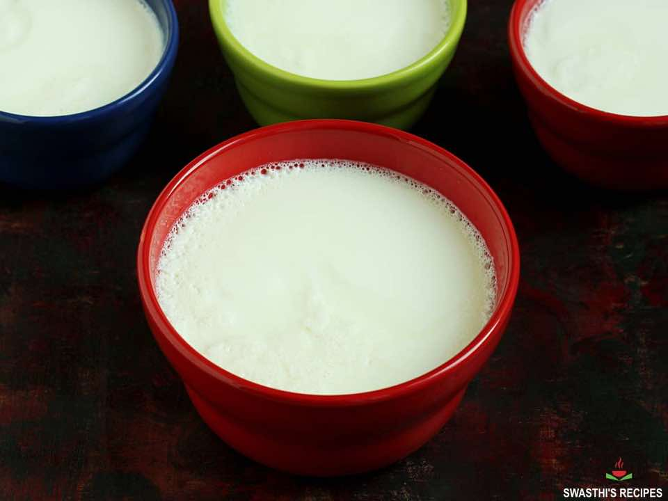

How to Make Curd (Dahi - Indian Yogurt)
SaucesIndian
Servings1 liter
PrepPT8H
CookPT20M

Ingredients
- 1 liter milk (full fat or whole milk)
- 1 teaspoon curd /dahi (or yogurt as starter (increase to ¾ to 1 tbsp. if you are making this in winters))
Directions
- Preparation
- Rinse a pot well. This reduces the chances of milk solids getting stuck to the bottom.
- Pour milk and bring it to boil on a medium to low flame.
- To get thick curd, once it comes to a boil simmer the milk for 15 mins on a very low flame.
- Keep stirring in between else the milk will get burnt and smell bad.
- Simmering step is to get a very thick curd. You can skip this if you are ok to have a moderately thick yogurt.
- How to make Curd
- Allow the milk to cool down.
- If you are intending to use a curd culture that has come down to room temperature, then allow the boiled milk to come down to luke warm temp.
- But if you are using the culture directly from the fridge, then the temperature of the milk must be mildly warmer than the luke warm.
- Immerse your clean finger in the milk and check. or Your food thermometer should ideally read 110 to 115 F (or 43 to 46 C). Immerse your thermometer into the milk and check.
- Add a tsp of curd to the warm milk and stir well. You will have to experiment with the amount of starter to use.
- * In India, my mother uses less than half tsp for 1 liter milk as it is not homogenized milk. But in Singapore I use about 1 tbsp or even more for 1 liter. It depends on the milk, climate and starter.
- Cover & move the bowl to a warm place.
- Allow it to set for 6 to 10 hrs depending on the climate.
- If you wish to set the curd well, you can break a red chili and drop it in the milk. it is optional and does not make the dahi or curd spicy or hot.
- * If you live in a cold place, then keep it in a casserole or thermocol box or oven with the light on.
- * Next if you intend to make curd in small bowls, check the step by step instructions after the recipe card.
- When the curd is set, move it to refrigerator.
- Instant Pot Curd
- Ensure your sealing ring and instant pot are clean and are free from any kind of strong flavors from the previous cooking. Pour 1 cup water to the steel insert of your instant pot.
- Pour 4 cups of milk to a stainless steel bowl. Place a trivet and then place the bowl of milk over it. Do not cover the bowl.
- Secure the instant pot with the lid and position the steam release value to sealing. Press pressure cook button and set the timer to “zero”.
- The Instant pot beeps when it is done. Let the pressure release naturally. Carefully remove the bowl and let the milk cool down to warm temperature.
- When the milk is warm, place your clean finger to ensure it is not too hot. It must be warm. Stir in half teaspoon yogurt and place the bowl back on the trivet in the instant pot. The pot should not be too hot.
- If you live in a cold region or during winters, you may turn on instant pot & press the yogurt button. But during other times, you don’t need to turn on the instant pot at all. I usually place the bowl in the instant pot without turning it on. The residual heat from the previous cooking will be enough to set the curd.
- It will take 6 to 8 hours for the curd to set well. Remove the bowl and place it in refrigerator.
Source
https://www.indianhealthyrecipes.com/how-to-make-thick-curd-at-home/
This page includes Schema.org Recipe structured data for recipe importers.